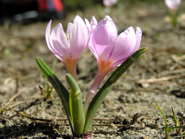
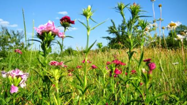

Рослини

Росли́ни (Plantae), або зелені рослини (Viridiplantae) — царство живих організмів. Назва Viridiplantae була запропонована у 1981році, щоб відрізнити представників царства від попереднього визначення рослин, які до того не утворювали монофілетичну групу. Також царство відоме під назвою Chlorobionta або група Chlorophyta/Embryophyta. Більшість членів царства були включені до царства Рослини (Plantae) в 1866 Ернстом Геккелем. Представники царства — автотрофні організми, для яких є характерною здатність до фотосинтезу та наявність щільної клітинної оболонки, яка утворена здебільшого целюлозою. Запасною речовиною у рослин є, як правило, крохмаль. Рослини є першою ланкою всіх харчових ланцюжків, так що від них залежить життя тварин. Вони є джерелом більш як десяти тисяч біологічно активних речовин, які діють на організм людини та тварин, зокрема при вживанні у їжу.
Вивченням рослин займається ботаніка.

Рослини Волинської області, занесені до Червоної книги України
До списку входить 109 видів рослин, з них:
- Судинних рослин — 88;
- Мохоподібних — 6;
- Водоростей — 10;
- Лишайників — 1;
- Грибів — 4.
Серед них за природоохоронним статусом:
- Вразливих — 61;
- Рідкісних — 22;
- Недостатньо відомих — 0;
- Неоцінених — 16;
- Зникаючих — 10.
- Зниклих у природі — 0;
- Зниклих — 0.